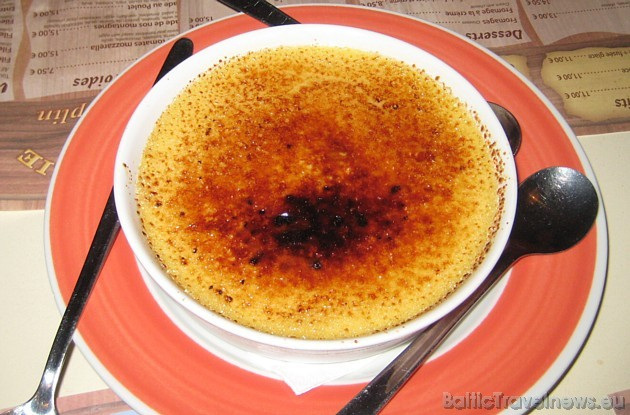
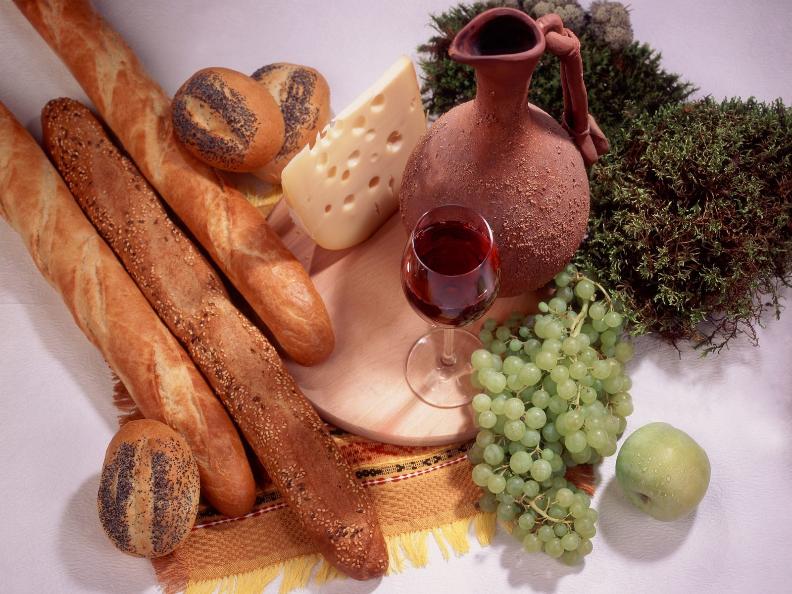
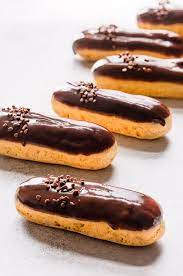
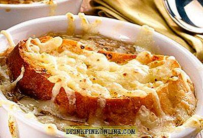
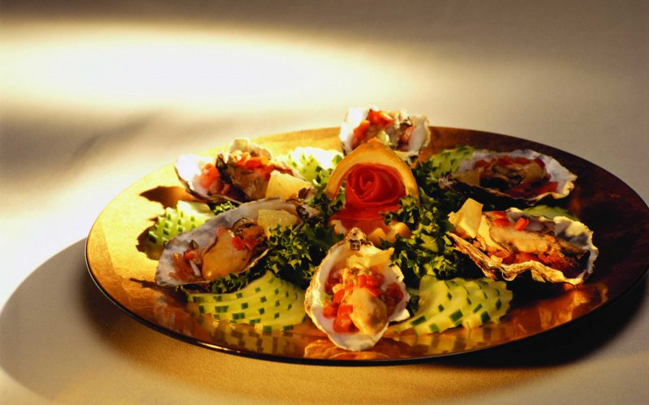

Atpakaļ
Francijas Ēdiens
|
Francija ir pazīstama kā ļoti izsmalcināta zeme, un ikvienai izsmalcinātai valstij un tautai ir arī izsmalcināta virtuve. Francijas ēdiena gatavošanas tradīcijās ietilpst ar garšu bagātu ēdienu gatavošana, kuros var atrast visdažādākās nianses, kuras padara šo ēdienu izcilu un baudīšanas vērtu.
Francijas nacionālā virtuve ir bagāta ar daudziem pazīstamiem un varbūt arī ne tik pazīstamiem ēdieniem. Visas Francijas kā valsts nacionālie pamatēdieni ir kā Franču sīpolu zupa un Franču biezzupa, tā Steika frī kartupeļi, bagetes unFranču sieri. Bet pie nacionālajiem desertiem ietilpst Makarūni, Eklēri, Šokolādes uzpūtenis, Krem brulē un vēl vairāki citi saldie ēdieni. |
populāri franču ēdieni un to receptes




